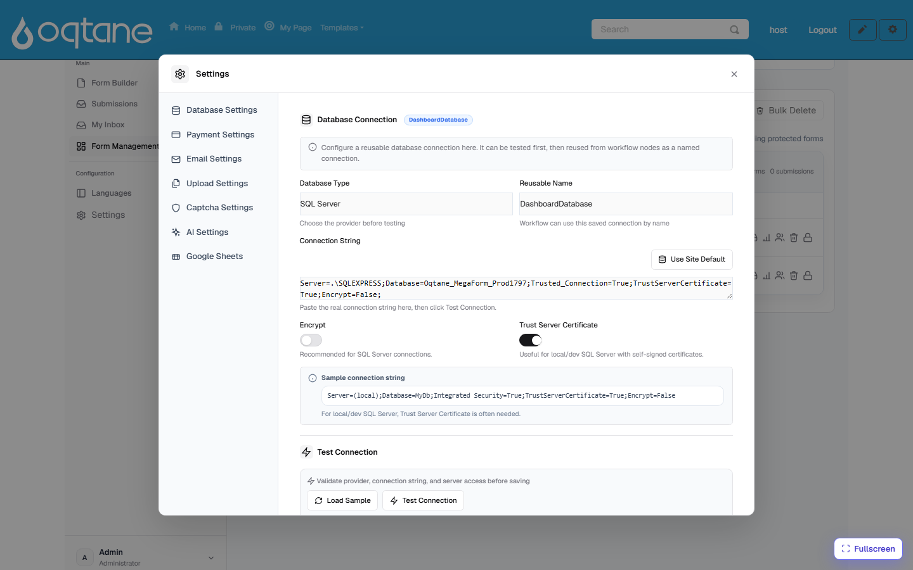
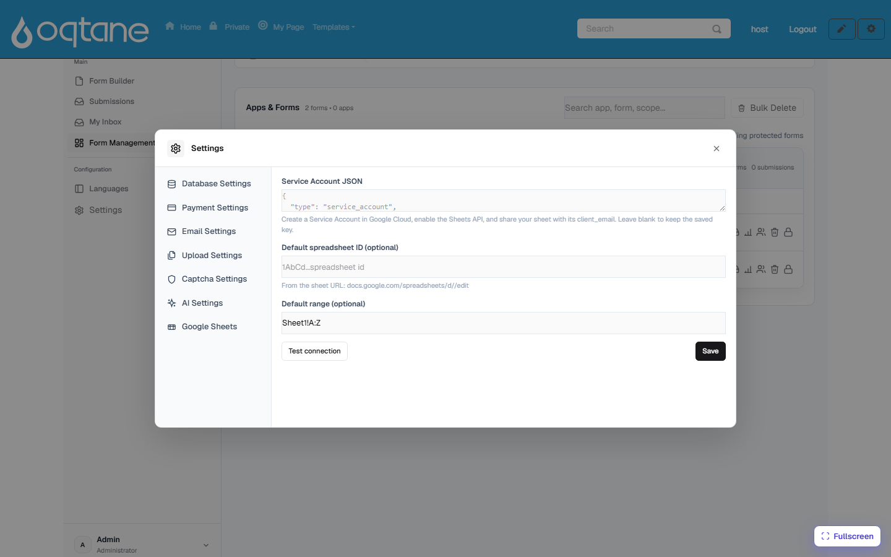

Storage & Integrations
Submissions always land in MegaForm's own store (browsable under Submissions). On top of that, MegaForm can also write each submission to storage you own — a SQL database table or a Google Sheet — so your data flows straight into the systems your team already uses.
Both integrations are configured from Form Dashboard → Settings.
Your SQL database

Settings → Database Settings holds one or more reusable named connections:
- Pick the Database Type (e.g. SQL Server) and give the connection a Reusable Name.
- Paste the Connection String — or click Use Site Default to reuse the site's own database. Encrypt and Trust Server Certificate toggles cover local/dev SQL setups.
- Click Test Connection before saving — the provider, connection string, and server access are validated first.
What named connections are used for:
- Per-form database insert — a form can map its fields to a table so every submission is
also
INSERT-ed into that table the moment it arrives (fail-soft: if the insert fails, the submission itself is never lost, and the error is logged for the admin). - Workflow nodes — Service Task (DB) steps in a workflow reference a connection by its reusable name.
- Data-driven forms — dropdowns, cascades, and data views built from your tables (the AI Form Designer can discover the tables and draft new ones).
Google Sheets

Settings → Google Sheets connects a site to Google:
- In Google Cloud, create a Service Account, enable the Sheets API, and paste the service-account JSON key here.
- Optionally set a default spreadsheet ID and range (e.g.
Sheet1!A:Z). - Test connection, then save. The key is stored server-side.
Then, for any form, use Connect Google Sheet (on the form's row in the dashboard) — paste the sheet's URL, share the sheet with the service account's e-mail as Editor, and every new submission is appended to the sheet as a row. Workflows can also push to Sheets with the Service Task (Sheet) node.
Other destinations
- Webhooks — per form, POST each submission to any URL you configure (with secret + custom headers).
- E-mail — notification and autoresponder mails per form (Settings → Email Settings).
- Files — uploaded files are stored by the host and streamed back through File download APIs.